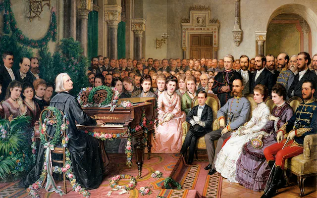
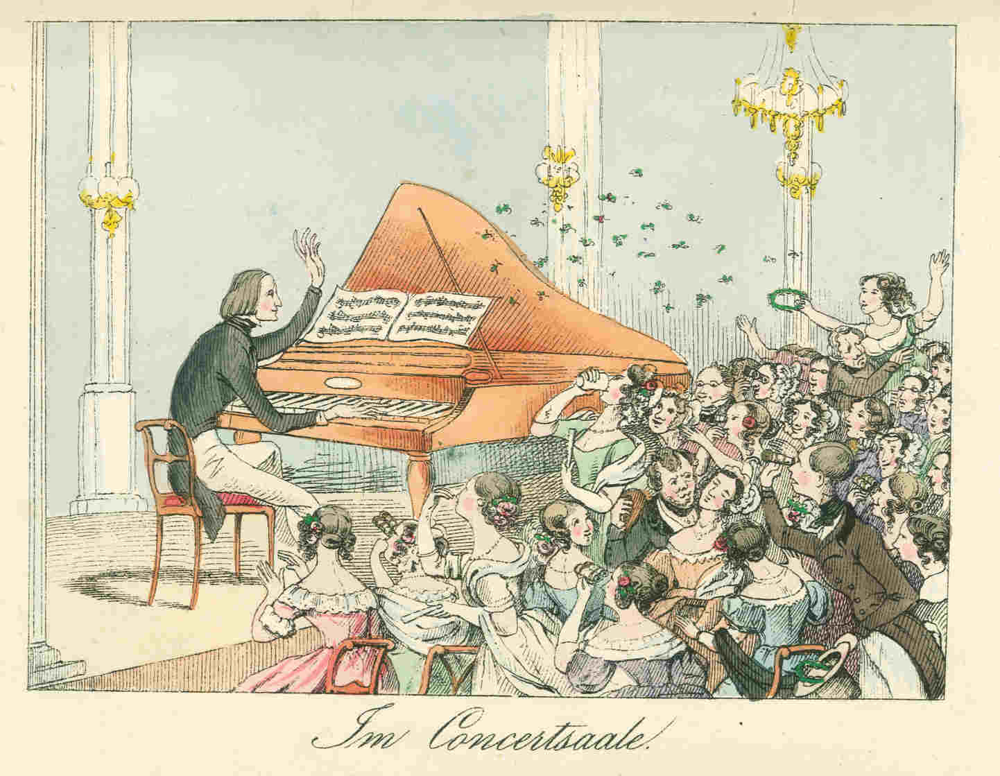
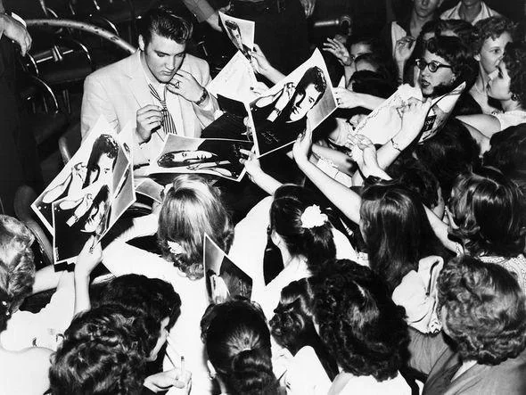
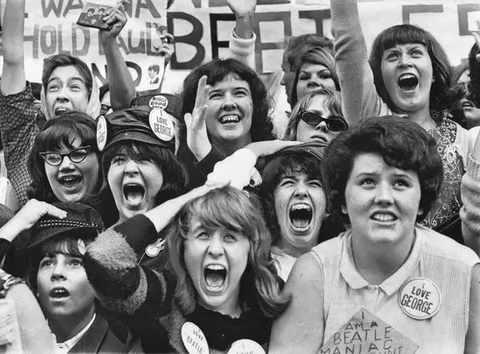
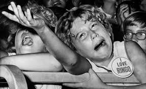
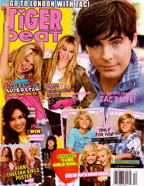
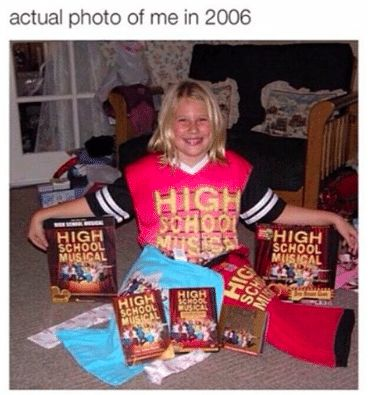
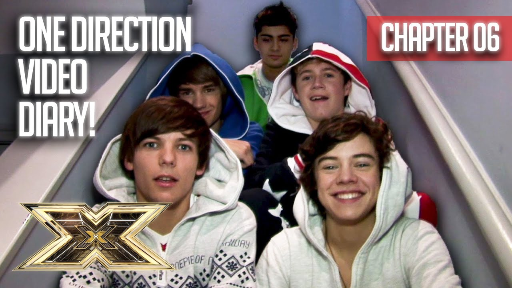
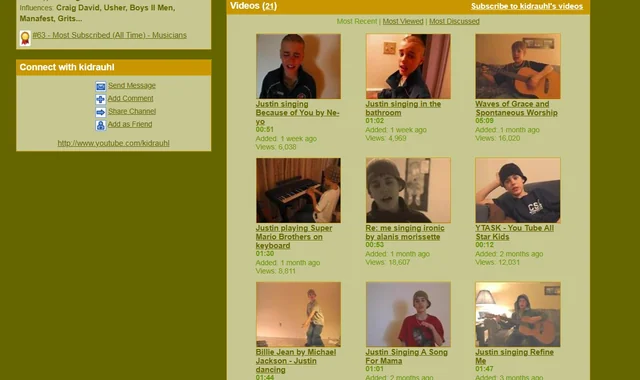
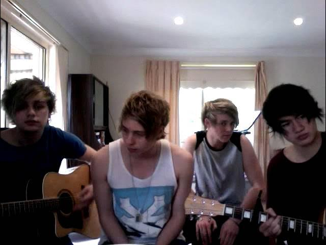

As the term implies, fangirls are predominantly female, describing young women obsessed with celebrities and musicians. Fangirl culture dates back to 1844, Lisztomania, when fans obsessed over composer Franz Liszt. In the 40’s, the world was introduced to Frank Sinatra, producing who are considered to be the original fangirls, the Bobbysoxers. The Bobbysoxers broke stereotypical fashion trends at the time. Wearing skirts that went above their ankles and bobby socks. The female fans were criticized by men and adults and written off as childish and immature.


Following the Bobbysoxers movement came the Elvis Presley craze of the mid to late 50’s. Across the world, women lost their minds over Elvis, creating mass hysteria. Next came the British Invasion beginning in the early 60’s. Paul McCartney, John Lennon, Ringo Starr, and George Harrison started The Beatles in England, but soon became a worldwide sensation, named Beatlemania. Another British band, the Rolling Stones, came soon after with new idol Mick Jagger. With countless hits, Michael Jackson ruled the music scene of the 80’s and gained the title “The King of Pop.” Michael made a huge impact on many passionate fans to this day. With members John Taylor, Andy Taylor, Roger Taylor, Simon Le Bon, and Nick Rhodes, Duran Duran continued the British Invasion and the boyband movement.



The 1990s and 2000s brought us Britney Spears and *NSYNC with Justin Timberlake, who is a pop icon in his own right. With fellow members Lance Bass, Joey Fatone, JC Chasez, and Chris Kirkpatrick. In the early 2000s, Disney Channel created stars suited for kids and tweens, like the fictional popstar, Hannah Montana, played by Miley Cyrus, and the cast of High School Musical, Zac Efron, Vanessa Hudgens, Corbin Bleu, and Ashley Tisdale.


The 2010’s brought the emergence of One Direction, formed on the U.K. talent competition show The X Factor, with members Niall Horan, Harry Styles, Louis Tomlinson, Zayn Malik, and Liam Payne. Justin Bieber also became an internet sensation, Bieber Fever, after posting song covers on YouTube. The 2010’s brought the presence of social media into fandoms, creating online communities. Now in the 2020s, Taylor Swift and Harry Styles take the number one and number six spots on the highest-grossing tours of all time.



Fangirls, just like everything, have evolved, but ultimately this subculture remains the same. Being passionate about their interests and creating communities despite others telling them to do otherwise. Men are often critical of fangirls, even though they create trends and are the backbone of pop culture.
A Medium article reads,
Their incessant desire and obsession for their favorite artist is what rules the trends and the media today, yet their interests are insanely trivialized by everyone. Female-dominated fandoms run the industry, but misogyny runs the narrative.